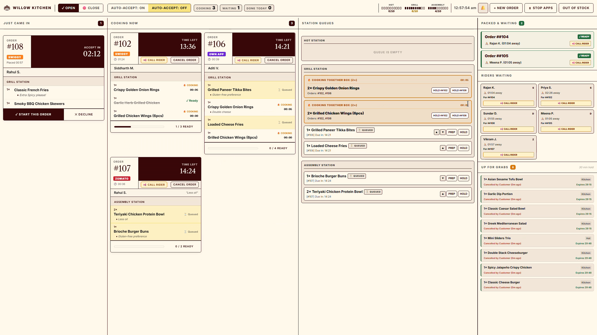
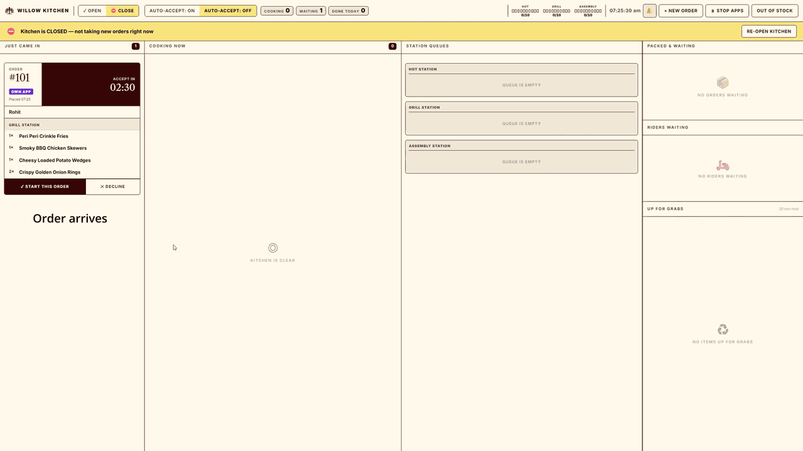
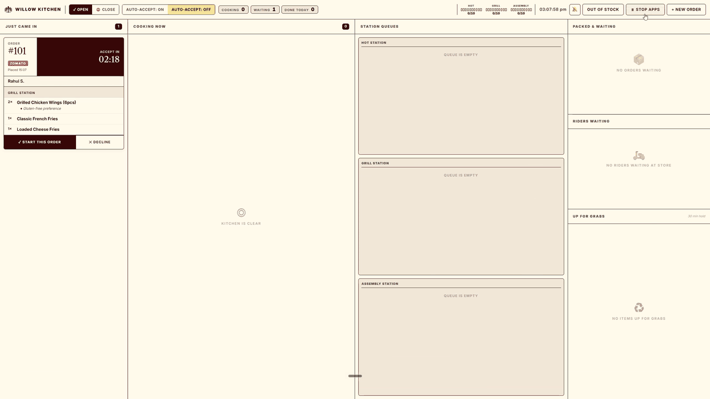

Cloud kitchen dashboard built to make manager’s decision making faster and help accelerate order delivery
A single screen system that manages orders from first ping to rider handover helping kitchens balance station loads, save canceled food, and stay in control during chaotic hours.

Try this interactive prototype
Take a peek into the system that gives an experience of having full control over the cloud kitchen.
The Cloud Kitchen Problem
Let me take you inside the kitchen at 8:00 PM on a Saturday. This is exactly where things start breaking down, and why I designed this system in the first place.
Imagine one physical kitchen preparing gourmet burgers, deep-fried wings, and healthy salad bowls cooking orders for 3 different brands out of one kitchen and by one shared team on the three stations during the peak weekend dinner rush, handling easily 80 orders an hour coming in simultaneously from Swiggy, Zomato, and their own app.
When the rush starts, orders flood in from different apps and the manager is holding a stack of paper chits, trying to coordinate everything. Cooks just grab whatever chit is closest, so everyone works in one station while other station is completely empty. Meanwhile, prepared food is going cold because the manager forgot to call the rider, or a rider stands at the door waiting for an order that haven't even started. If an order gets canceled due to delays, the food prepared goes straight into the trash causing food wastage and also kitchen ratings taking a hit.
This operational chaos directly leads to delayed deliveries, refund requests, and dropped kitchen ratings.
To measure success, I ignored complicated textbook metrics and focused strictly on the real, everyday challenges and goals of the kitchen manager to tackle them:
| CORE PROBLEM TO SOLVE | EXPECTED GOAL |
|---|---|
| Orders arrive from three apps at once, making it incredibly difficult to organize, assign, and prioritize items. This manual work slows down the manager's decisions. | A system that centralizes all three apps, helping the manager make fast decisions, assign tasks to stations, and prioritize items inside queues for on-time delivery. |
| Active orders get canceled mid-preparation, causing prepared food to be thrown away, resulting in high food waste and direct financial loss. | A system that tracks canceled prepared food and allows the manager to quickly reuse it to speed up and fulfill new incoming orders. |
| The kitchen gets overloaded during peak hours with no way to control incoming orders, leading to massive operational stress and customer frustration. | A control mechanism that lets the manager manage order inflow, allowing them to temporarily pause or stop incoming orders to let the kitchen catch up. |
| Prepared food sits going cold at the pass, or riders stand waiting at the door for ten minutes because the kitchen hasn't started their order. | A tracking system showing if a rider has arrived on-site or not, allowing the manager to make smart preparation and dispatch decisions based on rider status. |
Meet Our Persona
Understanding the human behind the pass — the physical limits, mental load, and split-second decisions that define a cloud kitchen shift.
Ramesh is a 28 year old Cloud Kitchen Operations Manager who spends 8 to 10 hours a day on his feet running the pass. Ramesh is a hands-on operator who relies entirely on memory, scribbling modifications on wet paper chits, and shouting numbers across the kitchen to keep his cooks moving. During peak rushes, he gets easily overwhelmed by multiple orders flooding in, and he is constantly stressed about orders getting canceled or letting packed orders go cold while riders crowd his pickup window.
Solution as a Journey
This journey shows how a cloud kitchen operations manager goes from facing a sudden, uncoordinated weekend order flood to clearing the entire rush calmly on time, covering steps like batching matching items together, reordering active station queues, and managing delivery executive dispatch times. The aim is to help them fast-track order preparation and handovers without letting food go cold.
Evaluate the incoming order's items and prep opportunities before accepting.
Ramesh reads the card for Order #111. The system flags a Prep Together opportunity because the Veg Patty Burger matches an item already queued. He clicks ✓ Start This Order to accept it.
Ensure the accepted order's items are distributed to the correct station lines.
The system automatically splits the order. The items populate under Hot Station in Column 3, allowing Ramesh to track their individual prep states.
Batch-cook duplicate items across different orders to save preparation time.
Ramesh clicks the prominent Prep Together button on the highlighted green block, instantly putting the matching Veg Patty Burgers from both orders into Cooking.
Change the cooking priority of a slow-prep item to speed it up.
Ramesh clicks Prep on the Paneer Fresh Burger and clicks ▲ to slide it to the top of the queue, ensuring the cook prepares it next.
Track completed items on the card and launch remaining held items.
The Veg Patty Burger finishes cooking and automatically checks itself off on Card #111. Ramesh clicks Prep on the remaining BBQ Bacon Smash Burger to start its cooking timer.
Keep an eye on the cooking balance of the remaining items.
The Paneer Fresh Burger is fully cooked and marked ready, while the final BBQ Bacon Smash Burger is actively cooking.
Coordinate pickup for a fully packed order when the courier is delayed.
The final item is cooked, the card turns gold, and the packer boxes it. Because rider Kavita N. has not arrived, the order moves to Column 4. Ramesh clicks [ Call Rider ] to ping her.
Evaluate the team's operational performance once the active rush is cleared.
Kavita picks up the bag. With all active orders cleared (0 remaining), the Rush Summary modal automatically pops up, showing an on-time rate of 100% and key station load analytics.
The Core Decision Stories
These are the three decisions that helped in making the system effective for taking faster decisions and achieving faster food handover

When I tried showing items under individual order cards, it became chaotic for the manager. With multiple orders coming through, they had to constantly shift their eyes between different cards to manage timings and duplicate items. This manual searching took up too much time just to recognize items, leaving less time for actual decision-making and action—directly causing order delays.
I built a station-wise queue system where items automatically split into dedicated lanes (Hot, Grill, Assembly) based on stations, allowing the manager to track them by order number. I added simple arrow buttons and drag-and-drop so the manager can comfortably move items up or down. I also added a Prep Together option for similar items, with the granular control to hold back a specific item if some need to go out immediately while others can be delayed.
The manager takes decisions and actions much faster, directly increasing kitchen speed and delivering orders on time with 100% visual traceability.

During peak hours, managers cannot manually accept every incoming ticket. Aggregators like Swiggy and Zomato charge expensive penalty fees if orders are not accepted within three minutes. Also, placing the Cancel and Call Rider buttons right next to each other on the active card meant managers frequently made accidental cancellations.
I added a global Auto-Accept toggle to auto-approve orders and bypass fees during rushes. When turned off, rejections open a centered modal to select reasons cleanly. For active cards, I designed a double-tap gesture on the Cancel action, creating a physical safety net that prevents accidental inputs without slowing down the manager with annoying pop-ups.
The kitchen avoids expensive penalty fees and completely eliminates accidental order cancellations without slowing down the fast pace of the manager.

During peak hours, too many orders flowing from multiple apps to multiple stations causes panic and kitchen overload. I noticed local restaurants manually stop orders during busy Sunday afternoons when they can't handle the rush, but they often forget to turn the apps back on, leading to major revenue loss. Standard systems only offer total shutdowns, preventing managers from pausing just one busy app while keeping quieter channels open.
I designed a simplified Stop Apps modal allowing targeted channel or brand pauses for set times (15m, 30m, 1h, 2h). The system runs an auto-resume countdown timer on the screen with a manual override button, letting the manager easily turn the apps back on whenever they are ready.
The manager stays calm and manages orders without pressure, ensuring current orders deliver on time and new orders arrive only when the kitchen is free.
Scope of the Project
Since I had to ship a fully working prototype in exactly 7 days, I had to prioritize ruthlessly. I focused strictly on the core features that solve the immediate dinner rush chaos, and skipped everything else.
Before designing any screens, I set strict rules about how this kitchen operates in the real world:
Hot, Grill, Assembly). The priority and queue sequence set by the manager on their master display are automatically pushed to and followed by the cooks at these station screens.
Packed & Waiting if the food is packed but cannot be picked up yet because the delivery rider hasn't arrived. If the rider is already there (🟢 HERE NOW), the order bypasses manual handovers and is delivered directly to them.
To deliver the project on time, I prioritized between my additional feature ideas and kept those that are needed to solve the core problem and skipped others:
| ADDITIONAL FEATURES I BUILT | COMPLEX IDEAS I SKIPPED |
|---|---|
Stop Apps with TimerAn idea from my personal experience observing local restaurants manually pausing Swiggy/Zomato during peak hours (like Sunday afternoons) when they get overloaded. |
Previous Order Logs SectionAn idea to let the manager look back at previous order history. I killed this to keep the project light, but it could be the starting for future scope. |
Up for Grabs (Waste Prevention)Normally, cancellations simply disappear from the screen, letting prepared food go to waste. I built this section where canceled items stay for 30 minutes to fulfill new matching orders instantly. |
Item Pricing and BillingThe kitchen team doesn't handle pricing or payments they just execute, so I skipped it entirely. |
Station-Wise QueuesDecoupling individual items from parent cards into separate station tracks with active timers to prioritize preparation on sight. |
Inventory Management PageAn idea to track ingredients and stock. This would be a massive, separate product section, so I omitted it due to my timeline. |
User Stories in Action
Beyond the standard happy path, a kitchen manager faces unpredictable operational crises every single day. Here are four specific, high-pressure scenarios Ramesh faces during a typical shift, and how the system's tools help him resolve them quickly and stay in control.
Ramesh’s team is completely exhausted after a brutal lunch rush, and they desperately need a quick 15-minute break to clean up. He clicks ⏸ Stop Apps in the header, selects all channels, and pauses the kitchen's order inflow for exactly 15 minutes.
The team rests in complete calm without worrying about missed aggregator timeouts or penalty fees while a running banner counts down their remaining break time. Once the kitchen is ready to go again, Ramesh simply clicks the manual Resume button to instantly open the order flow.
The chef informs Ramesh that they have run out of a key ingredient for their menu item. Ramesh clicks Out of Stock in the header, selects the brand, and toggles the runout item to OFF to prevent any more automated acceptances.
When a new order lands requiring that specific item, the system blocks the auto-accept and flags the card with a warning badge. Ramesh cleanly rejects the order upfront, saving his cooks from wasted prep work and preventing the customer from receiving wrong, substituted items.
When an order is canceled mid-prep, its items are automatically sent to the Up for Grabs section for 30 minutes to guarantee freshness. This prevents prepared food from simply disappearing from the screen and going straight into the trash.
When a new order arrives with that same item, Ramesh clicks Accept and is prompted to reuse the Up for Grabs stock. Fulfilling it immediately bypasses the cooks, reducing food waste, saving money, and speeding up deliveries.
Riders arrive and wait outside for orders in preparation while packed orders are getting cold waiting for a rider. To manage this, the system shows if a rider is waiting (🟢 Arrived), helping Ramesh prioritize those specific orders for immediate handoff.
If an order is packed but the delivery rider is not there yet, Ramesh can simply click Call Rider on the card to alert them, preventing cooked food from sitting and going cold.
The AI-Assisted Workflow & Human-in-the-Loop
Rather than depending on AI to do my thinking, I used it strictly as a high-leverage tool to accelerate my design process. I acted as the Strategic Architect mapping out the operational logic, physical constraints, and business rules while using the AI as a high-speed compiler to translate my inputs into a working prototype.
The Iteration Loop: From Concept to Code
Google AI Studio as my ideation canvas where I threw in my understanding of problem and ideas. Instead of a solution, I gave prompts based on the intent of the user and asked it to build markdown(md) files.Antigravity to build the product step by step, iteration by iteration which gave me opportunity to understand the capabilities and come up with new ideas.Where the AI Broke & Designer Instinct Helped
Throughout this project, almost everything the AI built was only up to an average, standard level of what we commonly see on the web. While it did generate some good initial layout ideas, none of them actually fit the real, high-pressure physical journey of the kitchen manager.
That is where my designer instinct had to step in. To make the interface work under pressure, I had to put myself in the shoes of the manager, mapping out their true thought process and the intent behind every single action. Instead of starting from scratch, the AI gave me a zero-to-40% baseline and the entire project was about using my own human judgment to push that baseline from 40% to a fully working product.
Reflections, Future Scope & Closing the Shift
Key Learnings & Reflections
Building a working operational product in seven days taught me a core lesson about working with AI tools and designing under pressure:
Instead of asking the AI to directly code a feature, describing the operational intent behind the action yields far superior results.
Example: Asking for a generic “order card” resulted in a cluttered, standard layout. But describing the physical context that the order number must be huge so the manager can read it from a distance, and that the Cancel button needs a double-tap to prevent accidental misclicks next to Call Rider made the AI to compile highly specialized, context-aware code.
Future Scope (Expanding the Product)
If I had more time to expand this project, I would return to the three complex features I ruthlessly cut during our 1-week sprint to make Willow Kitchen more scalable:
Building a queryable database panel to let managers look back at previous shift tickets for audits or disputes.
Integrating transaction values, payouts, and billing status directly on the pass for reconciliation, without creating visual clutter.
A dedicated, real-time inventory tracking system that dynamically links available raw stocks to station prep capacities.
Thank You!
Thank you so much for reading through! As someone curious about building and designing products, I learned a lot about working with AI tools, testing ideas, and solving user problems in this project.
I would love to hear any thoughts, suggestions, or feedback you might have!
If you found this interesting, have feedback, or just want to connect, feel free to reach out!